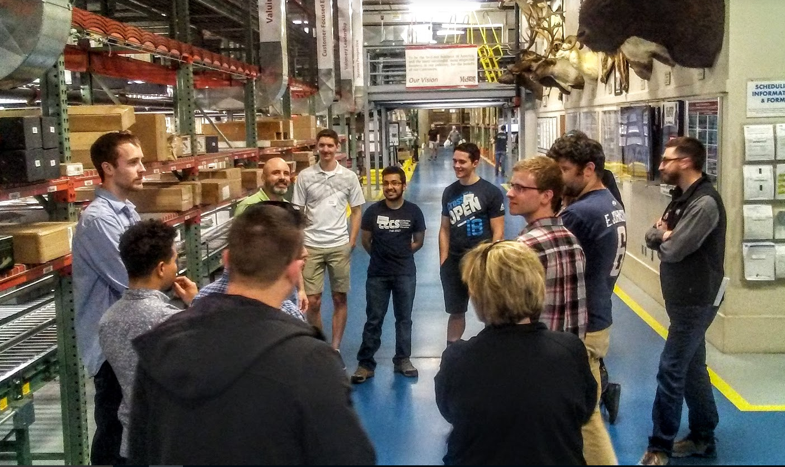

| vmwareplayer.pdf | How to use the VMWare WorkStation or VMWare Player software. (The screenshots in the pdf are slightly different from the newer versions of the VMWare software. But in general, the process for using the software is the same.) |
| unix1.pdf | How to work with linux. Extra linux commands here. |
| emacs.pdf | How to use emacs/xemacs. |
| gpp.pdf | How to use g++ to compile C++ programs. |
| make.pdf | How to use make to automate building your programs. |
| gdb.pdf | How to use gdb to help find bugs. |
| memory-debugging.pdf | How to use Google’s addr sanitizer and valgrind to find memory bugs. |
| git.pdf | How to use git and github. |
| googletest.pdf | How to use Google’s googletest to write C++ unit tests.. |
| static-analysis.pdf | TO COME |
| Helloweb1.pdf | How to create a basic website using pythonanywhere. (Moved to CISS430 notes.) |
| sdl.pdf | How to install the SDL library. Required for CISS245. (SDL is now installed in our Fedora virtual machine.) |
| latex.pdf | How to write LaTeX documents and generate pdf. |
| latex-graph.pdf | How to draw directed and undirected graphs (including DFAs, TMs). |
| latex-automata.pdf | How to draw automata diagram. |
| latex-2d-graphs.pdf | How to draw functions in 2D plane. |
| latex-surfaces.pdf | How to draw 3D surfaces. TO COME. |
| book.tar.gz | Book template. |